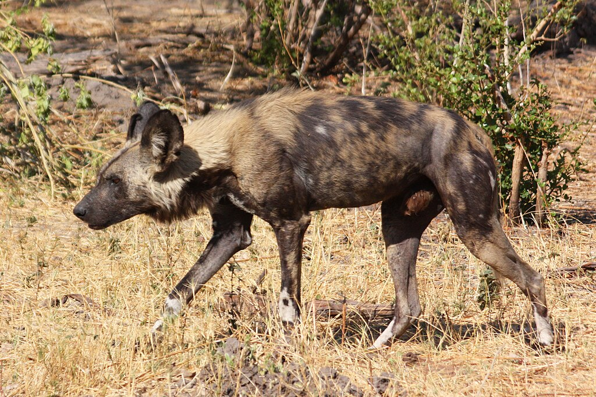
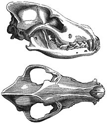
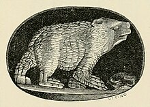
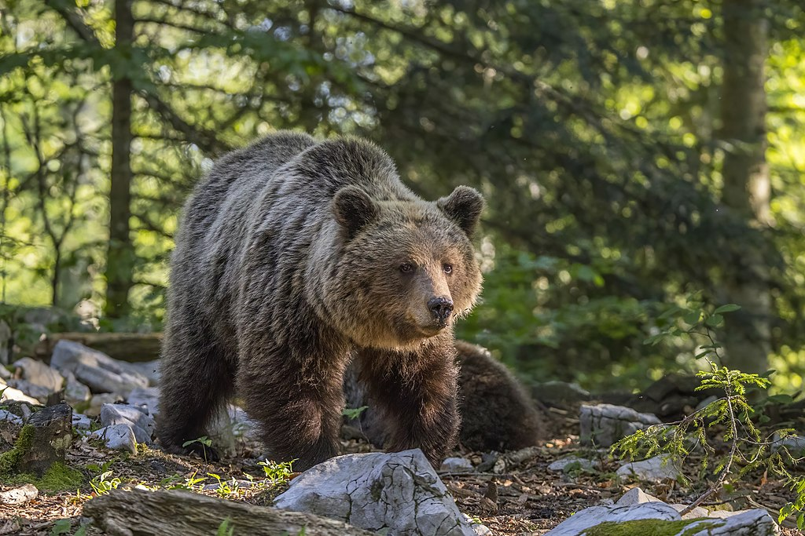
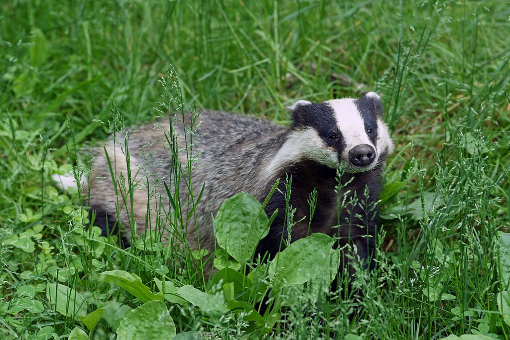

The African wild dog (Lycaon pictus), also known as the painted dog or Cape hunting dog, is a wild canine native to sub-Saharan Africa. It is the largest wild canine in Africa, and the only extant member of the genus Lycaon, which is distinguished from Canis by dentition highly specialised for a hypercarnivorous diet and by a lack of dewclaws. It is estimated that there are around 6,600 adults (including 1,400 mature individuals) living in 39 subpopulations, all threatened by habitat fragmentation, human persecution and outbreaks of disease. As the largest subpopulation probably consists of fewer than 250 individuals, the African wild dog has been listed as endangered on the IUCN Red List since 1990.[2] The species is a specialised diurnal hunter of terrestrial ungulates, which it captures by using its stamina and cooperative hunting to exhaust them. Its natural competitors are lions and spotted hyenas: the former will kill the dogs where possible whilst the latter are frequent kleptoparasites.[4] Like other canids, the African wild dog regurgitates food for its young but also extends this action to adults as a central part of the pack's social unit.[5][4][6] The young have the privilege of feeding first on carcasses. The African wild dog has been revered in several hunter-gatherer societies, particularly those of the San people and Prehistoric Egypt.
The English language has several names for the African wild dog, including African hunting dog, Cape hunting dog,[7] painted hunting dog,[8] painted dog,[9] painted wolf,[10] and painted lycaon.[11] Though the name African wild dog is widely used,[12] 'wild dog' is thought by conservation groups to have negative connotations that could be detrimental to its image; one organisation promotes the name 'painted wolf',[13][14][15] whilst the name 'painted dog' has been found to be the most likely to counteract negative perceptions.
The earliest written reference for the species appears to be from Oppian, who wrote of the thoa, a hybrid between the wolf and leopard, which resembles the former in shape and the latter in colour. Solinus's Collea rerum memorabilium from the third century AD describes a multicoloured wolf-like animal with a mane native to Ethiopia.[11] The African wild dog was scientifically described in 1820 by Coenraad Jacob Temminck after examining a specimen from the coast of Mozambique. He named the animal Hyaena picta, erroneously classifying it as a species of hyena. It was later recognised as a canid by Joshua Brookes in 1827 and renamed Lycaon tricolor. The root word of Lycaon is the Greek λυκαίος (lykaios), meaning ‘wolf-like’. The specific epithet pictus (Latin for ‘painted’), which derived from the original picta, was later returned to it, in conformity with the International Rules on Taxonomic Nomenclature.[17] Paleontologist George G. Simpson placed the African wild dog, the dhole and the bush dog together in the subfamily Simocyoninae on the basis of all three species having similarly trenchant carnassials. This grouping was disputed by Juliet Clutton-Brock, who argued that other than dentition too many differences exist among the three species to warrant classifying them in a single subfamily.
Gorillas are herbivorous, predominantly ground-dwelling great apes that inhabit the tropical forests of equatorial Africa. The genus Gorilla is divided into two species: the eastern gorilla and the western gorilla, and either four or five subspecies. The DNA of gorillas is highly similar to that of humans, from 95 to 99% depending on what is included, and they are the next closest living relatives to humans after chimpanzees and bonobos. Gorillas are the largest living primates, reaching heights between 1.25 and 1.8 metres, weights between 100 and 270 kg, and arm spans up to 2.6 metres, depending on species and sex. They tend to live in troops, with the leader being called a silverback. The eastern gorilla is distinguished from the western by darker fur colour and some other minor morphological differences. Gorillas tend to live 35–40 years in the wild. Gorillas' natural habitats cover tropical or subtropical forest in Sub-Saharan Africa. Although their range covers a small percentage of Sub-Saharan Africa, gorillas cover a wide range of elevations. The mountain gorilla inhabits the Albertine Rift montane cloud forests of the Virunga Volcanoes, ranging in altitude from 2,200 to 4,300 metres (7,200 to 14,100 ft). Lowland gorillas live in dense forests and lowland swamps and marshes as low as sea level, with western lowland gorillas living in Central West African countries and eastern lowland gorillas living in the Democratic Republic of the Congo near its border with Rwanda. There are thought to be around 316,000 western gorillas in the wild, and 5,000 eastern gorillas. Both species are classified as Critically Endangered by the IUCN; all subspecies are classified as Critically Endangered with the exception of the mountain gorilla, which is classified as Endangered. There are many threats to their survival, such as poaching, habitat destruction, and disease, which threaten the survival of the species. However, conservation efforts have been successful in some areas where they live.
The word gorilla comes from the history of Hanno the Navigator (c. 500 BC), a Carthaginian explorer on an expedition to the west African coast to the area that later became Sierra Leone.[1][2] Members of the expedition encountered "savage people, the greater part of whom were women, whose bodies were hairy, and whom our interpreters called Gorillae".[3][4] It is unknown whether what the explorers encountered were what we now call gorillas, another species of ape or monkeys, or humans.[5] Skins of gorillai women, brought back by Hanno, are reputed to have been kept at Carthage until Rome destroyed the city 350 years later at the end of the Punic Wars, 146 BC. In 1625 Andrew Battel mentioned the existence of the animal, under the named of pongo: This Pongo is in all proportion like a man, but... he is more like a Giant in stature, than a man: for he is very tall, [and] hath a man's face, hollow-eyed, with long haire vpon his browes. His face and eares are without haire, and his hands also. His bodie is full of haire, but not very thicke, and it is a dunnish colour. . . Hee goeth alwaies vpon his legs, and carrieth his hands clasped on the nape of his necke, when he goeth upon the ground... They goe many together, and kill many Negroes that trauaile in the Woods . . . Those Pongos are neuer taken aliue, because they are so strong, that ten men cannot hold one of them... — Andrew Battel, 1625[6] A century and a half after Battel's story was published, one writer claimed that "the large species, described by Buffon and other authors as of the size of a man, is held by many to be a Chimera."[6] The American physician and missionary Thomas Staughton Savage and naturalist Jeffries Wyman first described the western gorilla in 1847 from specimens obtained in Liberia.[7] They called it Troglodytes gorilla, using the then-current name of the chimpanzee genus. The species name was derived from Ancient Greek Γόριλλαι (gorillai) 'tribe of hairy women',[8] as described by Hanno.
The closest relatives of gorillas are the other two Homininae genera, chimpanzees and humans, all of them having diverged from a common ancestor about 7 million years ago.[9] Human gene sequences differ only 1.6% on average from the sequences of corresponding gorilla genes, but there is further difference in how many copies each gene has.[10]Until recently, gorillas were considered to be a single species, with three subspecies: the western lowland gorilla, the eastern lowland gorilla and the mountain gorilla.[5][12] There is now agreement that there are two species, each with two subspecies.[13] More recently, a third subspecies has been claimed to exist in one of the species. The separate species and subspecies developed from a single type of gorilla during the Ice Age, when their forest habitats shrank and became isolated from each other.[14] Primatologists continue to explore the relationships between various gorilla populations.[5] The species and subspecies listed here are the ones upon which most scientists agree.[15][13]

The lion (Panthera leo) is a large cat of the genus Panthera, native to Africa and India. It has a muscular, broad-chested body; a short, rounded head; round ears; and a hairy tuft at the end of its tail. It is sexually dimorphic; adult male lions are larger than females and have a prominent mane. It is a social species, forming groups called prides. A lion's pride consists of a few adult males, related females, and cubs. Groups of female lions usually hunt together, preying mostly on large ungulates. The lion is an apex and keystone predator; although some lions scavenge when opportunities occur and have been known to hunt humans, lions typically do not actively seek out and prey on humans. The lion inhabits grasslands, savannahs, and shrublands. It is usually more diurnal than other wild cats, but when persecuted, it adapts to being active at night and at twilight. During the Neolithic period, the lion ranged throughout Africa and Eurasia, from Southeast Europe to India, but it has been reduced to fragmented populations in sub-Saharan Africa and one population in western India. It has been listed as Vulnerable on the IUCN Red List since 1996 because populations in African countries have declined by about 43% since the early 1990s. Lion populations are untenable outside designated protected areas. Although the cause of the decline is not fully understood, habitat loss and conflicts with humans are the greatest causes for concern. One of the most widely recognised animal symbols in human culture, the lion has been extensively depicted in sculptures and paintings, on national flags, and in literature and films. Lions have been kept in menageries since the time of the Roman Empire and have been a key species sought for exhibition in zoological gardens across the world since the late 18th century. Cultural depictions of lions were prominent in Ancient Egypt, and depictions have occurred in virtually all ancient and medieval cultures in the lion's historic and current range.
The English word lion is derived via Anglo-Norman liun from Latin leōnem (nominative: leō), which in turn was a borrowing from Ancient Greek λέων léōn. The Hebrew word לָבִיא lavi may also be related.[4] The generic name Panthera is traceable to the classical Latin word 'panthēra' and the ancient Greek word πάνθηρ 'panther'.[5]
Felis leo was the scientific name used by Carl Linnaeus in 1758, who described the lion in his work Systema Naturae.[3] The genus name Panthera was coined by Lorenz Oken in 1816.[10] Between the mid-18th and mid-20th centuries, 26 lion specimens were described and proposed as subspecies, of which 11 were recognised as valid in 2005.[1] They were distinguished mostly by the size and colour of their manes and skins.[11]

The Eurasian wolf (Canis lupus lupus), also known as the common wolf,[3] is a subspecies of grey wolf native to Europe and Asia. It was once widespread throughout Eurasia prior to the Middle Ages. Aside from an extensive paleontological record, Indo-European languages typically have several words for "wolf", thus attesting to the animal's abundance and cultural significance.[4] It was held in high regard in Baltic, Celtic, Slavic, Turkic, ancient Greek, Roman, Dacian, and Thracian cultures, whilst having an ambivalent reputation in early Germanic cultures.[5] It is the largest of Old World grey wolves, averaging 39 kg (86 lb) in Europe;[6] however, exceptionally large individuals have weighed 69–79 kg (152–174 lb), though this varies according to region.[7][8] Its fur is relatively short and coarse,[3] and is generally of a tawny colour, with white on the throat that barely extends to the cheeks.[8] Melanists, albinos, and erythrists are rare, and mostly the result of wolf-dog hybridisation.[9] According to Erik Zimen, the howl of the Eurasian wolf is much more protracted and melodious than that of North American grey wolf subspecies, whose howls are louder and have a stronger emphasis on the first syllable.[10] Many Eurasian wolf populations are forced to subsist largely on livestock and garbage in areas with dense human activity, though wild ungulates such as moose, red deer, roe deer and wild boar are still the most important food sources in Russia and the more mountainous regions of Eastern Europe. Other prey species include reindeer, argali, mouflon, wisent, saiga, ibex, chamois, wild goats, fallow deer, and musk deer.[11]
In describing North American wolves, John Richardson used European wolves as a basis for comparison, summarising the differences between the two forms as: The European wolf's head is narrower, and tapers gradually to form the nose, which is produced on the same plane with the forehead. Its ears are higher and somewhat nearer to each other; their length exceeds the distance between the auditory opening and the eye. Its loins are more slender, its legs longer, feet narrower, and its tail is more thinly clothed with fur. The shorter ears, broader forehead, and thicker muzzle of the American Wolf, with the bushiness of the hair behind the cheek, give it a physiognomy more like the social visage of an Esquimaux dog than the sneaking aspect of a European Wolf.[12]
The size of Eurasian wolves is subject to geographic variation, with animals in Russia and Scandinavia being larger than those residing in Western Europe,[13] having been compared by Theodore Roosevelt to the large wolves of north-western Montana and Washington.[14] Adults from Russia measure 105–160 cm (41–63 in) in length, 80–85 cm (31–33 in) in shoulder height, and weigh on average 32–50 kg (71–110 lb), with a maximum weight of 69–80 kg (152–176 lb).[7] The largest on record was killed after World War II in the Kobelyakski Area of the Poltavskij Region in the Ukrainian SSR, and weighed 86 kg (190 lb).[15] Larger weights of 92–96 kg (203–212 lb) have been reported in Ukraine, though the circumstances under which these latter animals were weighed are not known.[7]: 174 Although similar in size to central Russian wolves, Swedish and Norwegian wolves tend to be more heavily built with deeper shoulders.[13] One wolf killed in Romania was recorded to have weighed 72 kg (159 lb).[16] In Italian wolves, excepting the tail, body lengths range from 110 to 148 cm, while shoulder height is 50–70 cm. Males weigh between 25 and 35 kg (55 and 77 lb) and rarely 45 kg (99 lb).[17] The now extinct British wolves are known to have reached similar sizes to Arctic wolves.[18]

The Eurasian brown bear (Ursus arctos arctos) is one of the most common subspecies of the brown bear,[2] and is found in much of Eurasia. It is also called the European brown bear, common brown bear, common bear, and colloquially by many other names. The genetic diversity of present-day brown bears (Ursus arctos) has been extensively studied over the years and appears to be geographically structured into five main clades based upon analysis of the mtDNA.[3]
The Eurasian brown bear has brown fur, which ranges from yellowish-brown to dark brown, red-brown, and almost black in some cases; albinism has also been recorded.[4] The fur is dense to varying degrees and the hair can grow up to 10 cm (3.9 in) in length. The head normally is quite round and has relatively small rounded ears, a wide skull, and a mouth equipped with 42 teeth, including predatory teeth. It has a powerful bone structure and large paws equipped with claws that can grow up to 10 cm (3.9 in) in length. The weight varies depending on habitat and the time of the year. A full-grown male weighs on average between 350 and 500 kilograms (770 and 1,100 lb),[5] and reaches a maximum weight of 650 kg (1,430 lb) and length of nearly 2.5 m (8.2 ft). Females typically range between 150 and 300 kg (660 lb).[6] They have a lifespan of 20 to 30 years in the wild.[7]
Eurasian brown bears were used in Ancient Rome for fighting in arenas. The strongest bears apparently came from Caledonia and Dalmatia.[8] In antiquity, the Eurasian brown bear was largely carnivorous, with 80% of its diet consisting of animal matter. However, as its habitat increasingly diminished, the portion of meat in its diet decreased with it until by the late Middle Ages, meat consisted of only 40% of its dietary intake. Today, meat makes up little more than 10–15% of its diet.[8] Whenever possible, the brown bear will consume sheep.[9] Unlike in North America, where an average of two people a year are killed by bears, Scandinavia only has records of three fatal bear attacks within the last century.[10] However, in late 2019, brown bears killed three men in Romania in just over a month.[11]
The oldest fossils are from the Choukoutien, China, and date back about 500,000 years.[12] It is known from mtDNA studies that during the Pleistocene ice age it was too cold for the brown bear to survive in Europe except in three places: Russia, Spain, and the Balkans.[13] However, a newer study found that brown bears were present in France and Belgium during the Last Glacial Maximum as well, indicating they were not as restricted to southern refugia as previously thought.[14] Modern research[15] has made it possible to track the origin of the subspecies. The species to which it belongs developed more than 500,000 years ago, and researchers have found that the Eurasian brown bear separated about 850,000 years ago, with one branch based in Western Europe and the other branch in Russia, Eastern Europe and Asia.[13] Through the research of mitochondrial DNA (mtDNA), researchers have found that the European family has divided into two clades—one in the Iberian Peninsula and the Balkans, the other in Russia.[13][16] There is a population in Scandinavia that includes bears of the western and eastern lineages.[16] By analyzing the mtDNA of the southern population, researchers have found that they have probably come from populations in the Pyrenees in Southern France and Spain and the Cantabrian Mountains (Spain). Bears from these populations spread to southern Scandinavia after the last ice age. The northern bear populations originate in the Finnish/Russian population. Probably their ancestors survived the ice age in the ice-free areas west of the Ural Mountains, and thereafter spread to Northern Europe.[13]
Brown bears could once be found across most of Eurasia, compared to the more limited range today. General habitats included areas such as grassland, sparsely vegetated land, and wetlands. Although included as of Least Concern on the 2006 IUCN Red List of Threatened Species (which refers to the global species, not to the Eurasian brown bear specifically), local populations, specifically those in the European Union, are becoming increasingly scarce.[17] As the IUCN itself adds: "Least Concern does not always mean that species are not at risk. There are declining species that are evaluated as Least Concern." The brown bear has long been extinct in the British Isles (at least 1,500 years ago, possibly even 3,000 years ago),[18][19] Denmark (about 6,500 years ago),[20] the Netherlands (about 1,000 years ago, although later singles rarely wandered from Germany),[21] Belgium and Luxembourg, with more recent extinctions in Germany (in the year 1835, although singles wandering from Italy were recorded in 2006 and 2019),[22][23] Switzerland (in 1904, although a single was seen in 1923 and since 2005 there has been an increasing number of sightings of wanderers from Italy),[24][25] and Portugal (in 1843, although a wanderer from Spain was recorded in 2019).[26] Globally, the largest population is found east of the Ural mountain range, in the large Siberian forests; brown bears are also present in smaller numbers in parts of central Asia. The largest brown bear population in Europe is in Russia, where it has now recovered from an all-time low caused by intensive hunting. Populations in Baltoscandia are similarly, albeit slowly, increasing. They include almost 3,000 bears in Sweden, 2,000 in Finland, 1,100 in Estonia[27] and around 100 in Norway. Large populations can also be found in Romania (around 6,000), Slovakia (around 1,200), Bosnia and Herzegovina, Croatia (1,200), Slovenia (1,100),[28] North Macedonia, Bulgaria, Poland, Turkey, and Georgia. Small but still significant populations can also be found in Albania, Greece, Serbia and Montenegro.[29] In 2005, there were an estimated 200 in Ukraine; these populations are part of two distinct metapopulations: the Carpathian with over 5000 individuals, and the Dinaric-Pindos (Balkans) with around 3000 individuals.[30] There is a small but growing population (at least 70 bears)[31] in the Pyrenees, on the border between Spain and France, which was once on the edge of extinction,[32] as well as two subpopulations in the Cantabrian Mountains in Spain (amounting to around 250 individuals).[33] There are also populations totalling around 100 bears in the Abruzzo, South Tyrol and Trentino regions of Italy.[34] Bears from the aforementioned Italian regions occasionally cross over to bordering Switzerland,[35][36][37] which has not hosted a native population since its last bear was shot and killed in Graubünden in 1904.[38] Outside Europe and Russia/the CIS, clades of brown bear persist in small, isolated, and for the most part highly threatened populations in Iran,[39] Afghanistan, Pakistan, parts of northwest India and central China, and on the island of Hokkaido in Japan.[40][41]
The historic distribution of bears and the impression the Eurasian brown bear has made on people are reflected in the names of several localities (some notable examples include Bern, Medvednica, Otepää and Ayu-Dag), as well as personal names—for example, Xiong, Bernard, Arthur, Ursula, Urs, Ursicinus, Orsolya, Björn, Nedved, Medvedev, and Otso. Bears of this subspecies appear very frequently in the fairy tales and fables of Europe, in particular, tales collected by Jakob and Wilhelm Grimm. The European brown bear was once common in Germany and alpine lands like Northern Italy, Eastern France, and most of Switzerland, and thus appears in tales of various dialects of German. The bear is traditionally regarded as the symbol of Russian (military and political) might. It is also Finland's national animal;[42] and in Croatia, a brown bear is depicted on the reverse of the Croatian 5 kuna coin, minted from 1993 to 2023.[43]
 The European badger (Meles meles), also known as the Eurasian badger, is a badger species in the family Mustelidae native to Europe and West Asia and parts of Central Asia. It is classified as least concern on the IUCN Red List, as it has a wide range and a large, stable population size which is thought to be increasing in some regions. Several subspecies are recognized, with the nominate subspecies (M. m. meles) predominating in most of Europe.[1] In Europe, where no other badger species commonly occurs, it is generally just called the "badger". The European badger is a powerfully built, black, white, brown, and grey animal with a small head, a stocky body, small black eyes, and a short tail. Its weight varies, being 7–13 kg (15–29 lb) in spring, but building up to 15–17 kg (33–37 lb) in autumn before the winter sleep period. It is nocturnal and is a social, burrowing animal that sleeps during the day in one of several setts in its territorial range. These burrows have multiple chambers and entrances, and are extensive systems of underground passages of 35–81 m (115–266 ft) length. They house several badger families that use these setts for decades. Badgers are fussy over the cleanliness of their burrow, carrying in fresh bedding and removing soiled material, and they defecate in latrines strategically situated outside their setts or en route to other setts.[2] Although classified as a carnivore, the European badger is an omnivore, feeding on a wide variety of plant and animal foods, including earthworms, large insects, small mammals, carrion, cereals, and tubers. Litters of up to five cubs are produced in spring. The young are weaned a few months later, but usually remain within the family group. The European badger has been known to share its burrow with other species, such as rabbits, red foxes, and raccoon dogs, but it can be ferocious when provoked, a trait which has been exploited in the now-illegal blood sport of badger-baiting. Badgers can be carriers of bovine tuberculosis, which also affects cattle. In England, badger populations are culled to try to reduce the incidence of bovine tuberculosis in cattle,[3] although the efficacy of this practice is strongly disputed,[4] and badger culls are widely considered cruel and inhumane.[5][6]
The source of the word "badger" is uncertain. The Oxford English Dictionary states it probably derives from "badge" + -ard, a reference to the white mark on its forehead that resembles a badge, and may date to the early 16th century.[7] The French word bêcheur ('digger') has also been suggested as a source.[8] A male badger is a boar, a female is a sow, and a young badger is a cub. A badger's home is called a sett.[9] Badger colonies are often called clans. The far older name "brock" (Old English: brocc), (Scots: brock) is a Celtic loanword (cf. Gaelic broc and Welsh broch, from Proto-Celtic *brokko) meaning 'grey'.[7] The Proto-Germanic term was *þahsu- (cf. German Dachs, Dutch das, Norwegian svin-toks; Early Modern English dasse), probably from the PIE root *tek'- 'to construct', which suggests that the badger was named after its digging of setts (tunnels); the Germanic term *þahsu- became taxus or taxō, -ōnis in Latin glosses, replacing mēlēs ('marten' or 'badger'),[10] and from these words the common Romance terms for the animal evolved (Italian tasso, French tesson/taisson/tasson—now blaireau is more common—, Catalan toixó, Spanish tejón, Portuguese texugo) except Asturian melandru.[11] Until the mid-18th century, European badgers were variously known in English as brock, pate, grey, and bawson. The name "bawson" is derived from "bawsened", which refers to something striped with white. "Pate" is a local name that was once popular in northern England. The name "badget" was once common, but only used in Norfolk, while "earth dog" was used in southern Ireland.[12] The badger is commonly referred to in Welsh as a mochyn daear ('earth pig'). [13]

Ursus meles was the scientific name used by Carl Linnaeus in 1758, who described the badger in his work Systema Naturae.[14]
European badgers are powerfully built animals with small heads, thick, short necks, stocky, wedge-shaped bodies and short tails. Their feet are plantigrade[23] or semidigitigrade[24] and short, with five toes on each foot.[25] The limbs are short and massive, with naked lower surfaces on the feet. The claws are strong, elongated and have an obtuse end, which assists in digging.[26] The claws are not retractable, and the hind claws wear with age. Old badgers sometimes have their hind claws almost completely worn away from constant use.[27] Their snouts, which are used for digging and probing, are muscular and flexible. The eyes are small and the ears short and tipped with white. Whiskers are present on the snout and above the eyes. Boars typically have broader heads, thicker necks and narrower tails than sows, which are sleeker, have narrower, less domed heads and fluffier tails. The guts of badgers are longer than those of red foxes, reflecting their omnivorous diet. The small intestine has a mean length of 5.36 m (17.6 ft) and lacks a cecum. Both sexes have three pairs of nipples but these are more developed in females.[25] European badgers cannot flex their backs as martens, polecats and wolverines can, nor can they stand fully erect like honey badgers, though they can move quickly at full gallop.[26] Adults measure 25–30 cm (9.8–11.8 in) in shoulder height,[28] 60–90 cm (24–35 in) in body length, 12–24 cm (4.7–9.4 in) in tail length, 7.5–13 cm (3.0–5.1 in) in hind foot length and 3.5–7 cm (1.4–2.8 in) in ear height. Males (or boars) slightly exceed females (or sows) in measurements, but can weigh considerably more. Their weights vary seasonally, growing from spring to autumn and reaching a peak just before the winter. During the summer, European badgers commonly weigh 7–13 kg (15–29 lb) and 15–17 kg (33–37 lb) in autumn.[29] The average weight of adults in the Białowieża Forest was 10.2 kg (22 lb) in spring but up to 19 kg (42 lb) in autumn, 46% higher than the spring low mass.[30] In Woodchester Park, England, adults in spring weighed on average 7.9 kg (17 lb) and in fall average 9.5 kg (21 lb).[31] In Doñana National Park, average weight of adult badgers is reported as 6 to 7.95 kg (13.2 to 17.5 lb), perhaps in accordance with Bergmann's rule, that its size decreases in relatively warmer climates.[32][33] Sows can attain a top autumn weight of around 17.2 kg (38 lb), while exceptionally large boars have been reported in autumn. The heaviest verified was 27.2 kg (60 lb), though unverified specimens have been reported to 30.8 kg (68 lb) and even 34 kg (75 lb) (if so, the heaviest weight for any terrestrial mustelid). If average weights are used, the European badger ranks as the second largest terrestrial mustelid, behind only the wolverine.[29] Although their sense of smell is acute, their eyesight is monochromatic as has been shown by their lack of reaction to red lanterns. Only moving objects attract their attention. Their hearing is no better than that of humans.[34]
The American alligator (Alligator mississippiensis), sometimes referred to as a gator or common alligator, is a large crocodilian reptile native to the Southeastern United States and a small section of northeastern Mexico. It is one of the two extant species in the genus Alligator, and is larger than the only other living alligator species, the Chinese alligator. Adult male American alligators measure 3.4 to 4.6 m (11.2 to 15.1 ft) in length, and can weigh up to 500 kg (1,100 lb), with unverified sizes of up to 5.84 m (19.2 ft) and weights of 1,000 kg (2,200 lb) making it the second largest member by length and the heaviest of the family Alligatoridae, after the black caiman. Females are smaller, measuring 2.6 to 3 m (8.5 to 9.8 ft) in length.[5][6][7][8][9] The American alligator inhabits subtropical and tropical freshwater wetlands, such as marshes and cypress swamps, from southern Texas to North Carolina.[10] It is distinguished from the sympatric American crocodile by its broader snout, with overlapping jaws and darker coloration, and is less tolerant of saltwater but more tolerant of cooler climates than the American crocodile, which is found only in tropical and warm subtropical climates. American alligators are apex predators and consume fish, amphibians, reptiles, birds, and mammals. Hatchlings feed mostly on invertebrates. They play an important role as ecosystem engineers in wetland ecosystems through the creation of alligator holes, which provide both wet and dry habitats for other organisms. Throughout the year (in particular during the breeding season), American alligators bellow to declare territory, and locate suitable mates.[11] Male American alligators use infrasound to attract females. Eggs are laid in a nest of vegetation, sticks, leaves, and mud in a sheltered spot in or near the water. Young are born with yellow bands around their bodies and are protected by their mother for up to one year.[12] This species displays parental care, which is rare for most reptiles. Mothers protect their eggs during the incubation period, and moves the hatchlings to the water using her mouth.[13] The conservation status of the American alligator is listed as Least Concern by the International Union for Conservation of Nature. Historically, hunting had decimated their population, and the American alligator was listed as an endangered species by the Endangered Species Act of 1973. Subsequent conservation efforts have allowed their numbers to increase and the species was removed from endangered status in 1987. The species is the official state reptile of three states: Florida, Louisiana, and Mississippi.
The American alligator was first classified in 1801 by French zoologist François Marie Daudin as Crocodilus mississipiensis. In 1807, Georges Cuvier created the genus Alligator for it,[14] based on the English common name alligator (derived from Spanish word el lagarto, "the lizard"). The American alligator and its closest living relative, the Chinese alligator, belong the subfamily Alligatorinae. Alligatorinae is the sister group to the caimans of Caimaninae, which together comprise the family Alligatoridae, which can be shown in the cladogram below:[15][16]
Fossils identical to the existing American alligator are found throughout the Pleistocene, from 2.5 million to 11.7 thousand years ago.[17] In 2016, a Late Miocene fossil skull of an alligator dating back to approximately 7-8 Mya was discovered in Marion County, Florida. Unlike the other extinct alligator species of the same genus, the fossil skull was virtually indistinguishable from that of the modern American alligator. This alligator and the American alligator are now considered to be sister taxa, meaning that the A. mississippiensis lineage has existed in North America for 7-8 million years.[1] The alligator's full mitochondrial genome was sequenced in the 1990s, and it suggests the animal evolved at a rate similar to mammals and greater than birds and most cold-blooded vertebrates.[18] However, the full genome, published in 2014, suggests that the alligator evolved much more slowly than mammals and birds.[19]
The American alligator is a relatively large species of crocodilian. On average, it is the largest species in the family Alligatoridae, with only the black caiman being possibly larger.[20] Weight varies considerably depending on length, age, health, season, and available food sources. Similar to many other reptiles that range expansively into temperate zones, American alligators from the northern end of their range, such as southern Arkansas, Alabama, and northern North Carolina, tend to reach smaller sizes. Large adult American alligators tend to be relatively robust and bulky compared to other similar-length crocodilians; for example, captive males measuring 3 to 4 m (9 ft 10 in to 13 ft 1 in) were found to weigh 200 to 350 kg (440 to 770 lb), although captive specimens may outweigh wild specimens due to lack of hunting behavior and other stressors.[21][22] Large male American alligators reach an expected maximum size up to 4.6 m (15 ft 1 in) in length and weighing up to 500 kg (1,100 lb), while females reach an expected maximum of 3 m (9 ft 10 in).[5][6][23] However, the largest free-ranging female had a total length of 3.22 m (10 ft 7 in) and weighed 170 kg (370 lb).[24] On rare occasions, a large, old male may grow to an even greater length.
American alligators have 74–80 teeth.[27] As they grow and develop, the morphology of their teeth and jaws change significantly.[59] Juveniles have small, needle-like teeth that become much more robust and narrow snouts that become broader as the individuals develop.[59] These morphological changes correspond to shifts in the American alligators' diets, from smaller prey items such as fish and insects to larger prey items such as turtles, birds, and other large vertebrates.[59] American alligators have broad snouts, especially in captive individuals. When the jaws are closed, the edges of the upper jaws cover the lower teeth, which fit into the jaws' hollows. Like the spectacled caiman, this species has a bony nasal ridge, though it is less prominent.[27] American alligators are often mistaken for a similar animal: the American crocodile. An easy characteristic to distinguish the two is the fourth tooth. Whenever an American alligator's mouth is closed, the fourth tooth is no longer visible. It is enclosed in a pocket in the upper jaw.
Adult American alligators held the record as having the strongest laboratory-measured bite of any living animal, measured at up to 13,172 N (1,343.2 kgf; 2,961 lbf). This experiment had not been, at the time of the paper published, replicated in any other crocodilians, and the same laboratory was able to measure a greater bite force of 16,414 N (1,673.8 kgf; 3,690 lbf) in saltwater crocodiles;[60][61] notwithstanding this very high biting force, the muscles opening the American alligator's jaw are quite weak, and the jaws can be held closed by hand or tape when an American alligator is captured. No significant difference is noted between the bite forces of male and female American alligators of equal size.[59] Another study noted that as the American alligator increases in size, the force of its bite also increases.[62]
The American bison and the European bison (wisent) are the largest surviving terrestrial animals in North America and Europe. They are typical artiodactyl (cloven hooved) ungulates, and are similar in appearance to other bovines such as cattle and true buffalo. They are broad and muscular with shaggy coats of long hair. Adults grow up to 2 metres (6 feet 7 inches) in height and 3.5 m (11 ft 6 in) in length for American bison[4][5] and up to 2.1 m (6 ft 11 in) in height[6] and 2.9 m (9 ft 6 in) in length for European bison.[7] American bison can weigh from around 400 to 1,270 kilograms (880 to 2,800 pounds)[5][8] and European bison can weigh from 800 to 1,000 kg (1,800 to 2,200 lb).[7] European bison tend to be taller than American bison. Bison are nomadic grazers and travel in herds. The bulls leave the herds of females at two or three years of age, and join a herd of males, which usually are smaller than female herds. Mature bulls rarely travel alone. Towards the end of the summer, for the reproductive season, the sexes necessarily commingle.[9] American bison are known for living in the Great Plains, but formerly had a much larger range, including much of the eastern United States and parts of Mexico. Both species were hunted close to extinction during the 19th and 20th centuries, but have since rebounded. The wisent in part owes its survival to the Chernobyl disaster, as the Chernobyl Exclusion Zone has become a kind of wildlife preserve for wisent and other rare megafauna such as the Przewalski's horse, though poaching has become a threat in recent years.[10] The American Plains bison is no longer listed as endangered, but this does not mean the species is secure. Genetically pure B. b. bison currently number only about 20,000, separated into fragmented herds—all of which require active conservation measures.[11] The wood bison is on the endangered species list in Canada[12] and is listed as threatened in the United States, though numerous attempts have been made by beefalo ranchers to have it entirely removed from the Endangered Species List.[13]

Although superficially similar, physical and behavioural differences exist between the American and European bison. The American species has 15 ribs, while the European bison has 14. The American bison has four lumbar vertebrae, while the European has five.[14] (The difference in this case is that what would be the first lumbar vertebra has ribs attached to it in American bison and is thus counted as the 15th thoracic vertebra, compared to 14 thoracic vertebrae in wisent.) Adult American bison are less slim in build and have shorter legs.[15] American bison tend to graze more, and browse less than their European relatives. Their anatomies reflect this behavioural difference; the American bison's head hangs lower than the European's. The body of the American bison is typically hairier, though its tail has less hair than that of the European bison. The horns of the European bison point through the plane of their faces, making them more adept at fighting through the interlocking of horns in the same manner as domestic cattle, unlike the American bison, which favours butting.[16] American bison are more easily tamed than their European cousins, and breed with domestic cattle more readily.[17]
The bovine tribe (Bovini) split about 5 to 10 million years ago into the buffalos (Bubalus and Syncerus) and a group leading to bison and taurine cattle.[18] Genetic evidence from nuclear DNA indicates that the closest living relatives of bison are yaks, with bison being nested within the genus Bos, rendering Bos without including bison paraphyletic. While nuclear DNA indicates that both extant bison species are each other's closest living relatives, the mitochondrial DNA of European bison is more closely related to that of domestic cattle and aurochs (while the mitochondrial DNA of American bison is closely related to that of yaks). This discrepancy is either suggested to be the result of incomplete lineage sorting or ancient introgression.[19][20][21] Bison are widely believed to have evolved from a lineage belonging to the extinct genus Leptobos during the Late Pliocene to Early Pleistocene in Asia. The earliest members of the bison lineage, known from the Late Pliocene to Early Pleistocene of the Indian Subcontinent (Bison sivalensis) and China (Bison palaeosinensis), approximately 3.4-2.6 million years ago (Ma) are placed in the subgenus Bison (Eobison). The oldest remains of Eobison in Europe are those Bison georgicus found in Dmanisi, Georgia, dated to around 1.76 Ma. More derived members of the genus are placed in the subgenus Bison (Bison), which first appeared towards the end of the Early Pleistocene, around 1.2 Ma, with early members of the subgenus including the widespread Bison schoetensacki.[22] The steppe bison (Bison priscus) first appeared during the mid-Middle Pleistocene in eastern Eurasia, and subsequently became widely distributed across Eurasia.[22] During the late Middle Pleistocene, around 195,000-135,000 years ago, the steppe bison migrated across the Bering land bridge into North America, becoming ancestral to modern American bison, as well as extinct forms such as the largest known bison, the long-horned Bison latifrons, and the smaller Bison antiquus, which became extinct at the end of the Late Pleistocene.[23] Modern American bison are thought to have evolved from B. antiquus during the Late Pleistocene-Holocene transition via the intermediate form Bison occidentalis.[24] The European bison, Bison bonasus, first appeared in Europe during the late Middle Pleistocene, where it existed in sympatry with the steppe bison. Its relationship with other extinct bison species is unclear, though it appears to be only distantly related to the steppe and American bisons, with possibly some interbreeding between the two lineages during the Middle Pleistocene.[20] The steppe bison survived into the early-mid Holocene in Alaska-Yukon and eastern Siberia, before becoming extinct.[25][26] Skulls of European bison (left) and American bison (right) During the population bottleneck caused by the great slaughter of American bison during the 19th century, the number of bison remaining alive in North America declined to as low as 541. During that period, a handful of ranchers gathered remnants of the existing herds to save the species from extinction. These ranchers bred some of the bison with cattle in an effort to produce "cattleo"[27] (today called "beefalo"). Accidental crossings were also known to occur. Generally, male domestic bulls were crossed with bison cows, producing offspring of which only the females were fertile. The crossbred animals did not demonstrate any form of hybrid vigor, so the practice was abandoned. Wisent-American bison hybrids were briefly experimented with in Germany (and found to be fully fertile) and a herd of such animals is maintained in Russia. A herd of cattle-wisent crossbreeds (zubron) is maintained in Poland. First-generation crosses do not occur naturally, requiring caesarean delivery. First-generation males are infertile. The U.S. National Bison Association has adopted a code of ethics that prohibits its members from deliberately crossbreeding bison with any other species. In the United States, many ranchers are now using DNA testing to cull the residual cattle genetics from their bison herds. The proportion of cattle DNA that has been measured in introgressed individuals and bison herds today is typically quite low, ranging from 0.56 to 1.8%.[27][28] There are also remnant purebred American bison herds on public lands in North America. Two subspecies of bison exist in North America: the plains bison and the wood bison.[29] Herds of importance are found in Yellowstone National Park, Wind Cave National Park in South Dakota, Blue Mounds State Park in Minnesota, Elk Island National Park in Alberta, and Grasslands National Park in Saskatchewan. In 2015, a purebred herd of 350 individuals was identified on public lands in the Henry Mountains of southern Utah via genetic testing of mitochondrial and nuclear DNA.[30] This study, published in 2015, also showed the Henry Mountains bison herd to be free of brucellosis, a bacterial disease that was imported with non-native domestic cattle to North America.[31] In 2021, the American Society of Mammalogists considered Bison to be a subgenus, and placed both bison species back into Bos.[32][failed verification] Relationships of bovines based on nuclear DNA, after Sinding, et al. 2021.[33]
.jpg)
The American flamingo (Phoenicopterus ruber) is a large species of flamingo native to the West Indies, northern South America (including the Galápagos Islands) and the Yucatán Peninsula. It is closely related to the greater flamingo and Chilean flamingo, and was formerly considered conspecific with the greater flamingo, but that treatment is now widely viewed (e.g. by the American and British Ornithologists' Unions) as incorrect due to a lack of evidence. It is also known as the Caribbean flamingo, although it is also present in the Galápagos Islands. It is the only flamingo that naturally inhabits North America along with the Neotropical realm. It is a cultural icon for the U.S. state of Florida, where it was formerly abundant in the southernmost regions, although it was largely extirpated by 1900 and is now only an uncommon visitor with a few small, potential resident populations.
The American flamingo breeds in South America (in the Galápagos Islands of Ecuador, coastal Colombia and Venezuela, and northern Brazil), in the West Indies (Trinidad and Tobago, Cuba, Jamaica, Hispaniola (the Dominican Republic and Haiti), The Bahamas, the Virgin Islands, and the Turks and Caicos Islands), and tropical and subtropical areas of continental North America (along the northern coast of the Yucatán Peninsula in Mexico, and formerly southern Florida in the United States). It is a vagrant to Puerto Rico, Anguilla, Barbados, Honduras, and (following its extirpation) Florida, although some Florida populations are now thought to be year-round residents.[1][3] The population in the Galápagos Islands differs genetically from that in the Caribbean; the Galápagos flamingos are significantly smaller, exhibit sexual dimorphism in body shape, and lay smaller eggs.[4] They are sometimes separated as Phoenicopterus ruber glyphorhynchus.[5] Its preferred habitats are similar to those of its relatives: saline lagoons, mudflats, and shallow, brackish coastal or inland lakes. An example habitat is the Petenes mangroves ecoregion of the Yucatán.[6]
The American flamingo is considered an iconic symbol of the state of Florida in the United States, and is widely featured on merchandise from the state. Although the species was a former resident and a possible breeder in Florida until the early 20th century, the strong association of flamingos with Florida likely originates from the Flamingo Hotel, a popular 1920s hotel in Miami Beach, which was named after an exotic bird for marketing purposes. The hotel's strong association with South Florida led to the popularity of flamingo souvenirs from the state, which was further boosted by the captive flamingos kept in Hialeah Park.[7] South Florida and the Florida Keys were likely the northernmost strongholds of the American flamingo's distribution until they suffered a population collapse around 1900. Large flocks of flamingos reaching up to a thousand individuals (with one potential sighting of up to 2,500 individuals) were sighted throughout the 19th century by naturalists such as Audubon and Wurdemann, although such spectacles were restricted to a small portion of southern and western Florida, at sites including Marco Island, Cape Sable and the Florida Keys. Many of these early reports note that Florida's flamingos suffered from heavy hunting, first by Native Americans and later early settlers; this hunting may have already affected numbers prior the earliest population estimates. The last report of a large flock was by Howe (1902), who reported a flock of over 500 to 1,000 flamingos east of Cape Sable. Following this report, flamingo observations in Florida only ranged in the single digits at a time for many decades.[3] A small number of museum specimens exist of flamingo eggs allegedly collected in Florida, all from the 1880s. Three of these (including one collected by Edward Wilkinson) are labeled as originating from the Florida Keys, while one is labeled as having been collected around Tampa. However, none of these specimens have specific collection notes, and the provenance of the Tampa specimen is considered highly erroneous. However, the collection dates are consistent with nesting seasons for other American flamingo populations, bolstering their accuracy. There is a single potential sight record of nesting flamingos in Florida: a 1901 report from a Keys resident mentions a flock of 40-50 flamingos on Sugarloaf Key standing by "whitish stumps", which may potentially refer to the flamingos' mud nests. Despite the ambiguity of these reports, the geomorphology of these sites closely resembles that of flamingo nesting sites elsewhere in the Caribbean, supporting their accuracy. It is thus largely agreed that flamingos were likely former nesters in Florida.[3]

Sightings of flamingos in Florida had reached a low by the 1940s, with no registered records for the entire decade. During the 1950s, wild flamingo sightings started to tick up again, but birds from the captive population at Hialeah Park frequently escaped, leading to the conclusion that the majority of flamingo sightings in Florida were of escapees; until 2018, the Florida Fish and Wildlife Conservation Commission listed it as a nonnative species. From a distance, untrained eyes can also confuse it with the roseate spoonbill, leading to further confusion.[3][8][9] This belief persisted into the 21st century even as flamingo sightings started to become more and more frequent, although at least one bird banded as a chick in the Yucatán Peninsula was recorded in 2012 in Everglades National Park. The maximum sizes of observed flocks also increased over time, with the largest increase between 1990 and 2015. The largest flock of Florida flamingos since the early 20th century was spotted in 2014, when a very large flock of over 147 flamingos temporarily stayed at Stormwater Treatment Area 2 on Lake Okeechobee, with a few returning the following year.[10][11]
.jpg)
A 2018 study confirmed the native status of flamingos in Florida and called for their federal protection as a threatened species, which had been debated by agencies during the prior decades. The study found that the growing flamingo sightings likely represent wild individuals and not escapes, and that at least some of these individuals are year-round residents in Florida. The status of flamingos as a former resident species was proven with the observations and breeding records by early naturalists, while the existence of modern resident populations was based on an abandoned young flamingo named Conchy found in Key West, who was radio-tagged and found to stay in Florida Bay year-round with other flamingos. The study also indicated that as flamingo populations around the Caribbean recover, more flamingos may join the resident populations and recolonize Florida, as has happened elsewhere in the Caribbean.[12][13][14][15] In 2023, Hurricane Idalia blew in large numbers of flamingos across the eastern United States, with records from Florida, Georgia, North Carolina, South Carolina, Virginia, Kentucky, Tennessee, as far north as Ohio and Pennsylvania, and as far northwest as Wisconsin. These vagrant populations likely originated from the Yucatán Peninsula, were caught in the storm while en route to Cuba, and carried until the storm's landfall in the United States, after which they dispersed.[16][17]
The American flamingo is a large wading bird with reddish-pink plumage. Like all flamingos, it lays a single chalky-white egg on a mud mound, between May and August; incubation until hatching takes from 28 to 32 days; both parents brood their young. They may reach sexual maturity between 3 and 6 years of age, though usually they do not reproduce until they are 6 years old. Their life expectancy of 40 years is one of the longest in birds. Adult American flamingos are smaller on average than greater flamingos, but are the largest flamingos in the Americas. They measure from 120 to 145 cm (47 to 57 in) tall. The males weigh an average of 2.8 kg (6.2 lb), while females average 2.2 kg (4.9 lb). Most of its plumage is pink, giving rise to its earlier name of rosy flamingo and differentiating adults from the much paler greater flamingo. The wing coverts are red, and the primary and secondary flight feathers are black. The bill is pink and white with an extensive black tip. The legs are entirely pink. The call is a goose-like honking. It is one of the species to which the Agreement on the Conservation of African-Eurasian Migratory Waterbirds applies.v